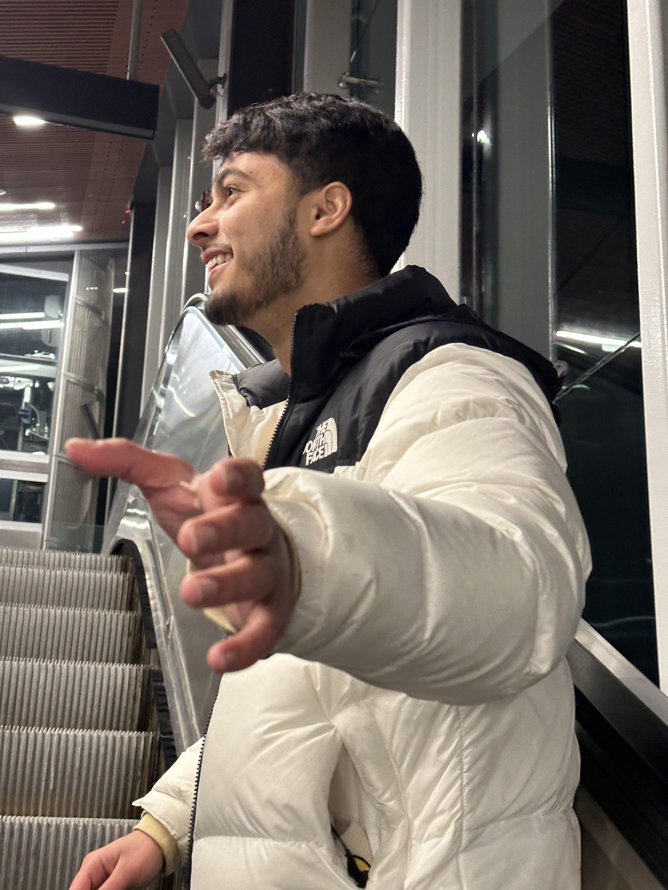

Overview
About Me
Greetings! My name is Shifat Iqbal. I'm a passionate guy who oves IOT (Internet of Things). Becuase of which it made me fall in love with CS! I'm very interested on topic related to AI, Machine Learning because I believe in next 2 years this is going to shape the world. So I have many projects in my head to use AI for the betterment of society! I also love doing Arduio and Raaspberry Pi projects. My favorite coding languages are Java & JavaScript, I know excotic!
Education: Computer Programing Diploma
Studying the fundamentals of Computer Programming, Computer Science, Software Development, Report Writing, Research of Ai and more. Database, Mathematics are also covered in my program. Link to program Outline
Personal Projects
-
Birthday Reminder Web App (React, Javascript, html 5, Azure Data
Studio)
This WebApp reminds its user when the birthdate they stored comes. This sends a overhead notification to the user when it's exactly 12:00 am. This stores user data in a database. Have plans to create a android app using android studio and a ios aapp using swift. With Paid version for native apps. Link to the GitHub Repositry
-
‘Her Closet’ Shopping Website (Html5, Javascript, CSS, Azure Data
Studio)
This Website is a shoping website that deals in physical products. This website can take customer payment, store customer payment in database, and then email the custoemr with reciept. Link to the GitHub Repositry
-
Travel Guide App (Android Studio, Java) Object Oriented
Programming
This is my ongoing project using Java, Android Studio and Azure Data Studio. This application can take user input, store it in database and perform actions upon user request. Link to GitHub Repositry
Hobbies
- I love working on Robotics projects
- I like take part in Automobile engineering student group of uOttawa
- I play Piano sometimes
- On bright sunny day I prefer Soccer
- I love to adventure specially in Mountain, lakes and shorelines!